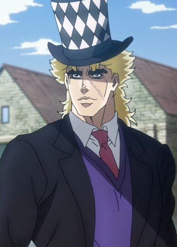
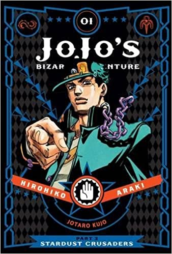

Wir die Jobros, haben uns dazu entschieden, das JoJo´s nicht einfach nur ein
Anime oder manga ist, Nein es ist so viel mehr. Es ist eine Lebenseinstellung,
oder sogar eine Religion. Auf dieser seite befinden sich alle informationen und
möglichkeiten um ein echter Jo-ist zu werden.
Unser Gott
Der gut-aussehende Mann auf dem Bild ist Hirohiko Araki, er ist der Mangaka
von JoJo´s bizarre adventure und von daher unser Gott. Wir verdanken Araki
ganz JoJo´s und wie könnte jemand anderes als Araki him self unser Gott sein.
Araki hat bisher 8 Mangas verfasst und davon wurden bisher 5 Animiert. Man
kann sich den genialen Anime ganz einfach auch Crunchyroll anschauen. Das geht sogar
umsonst, wenn man etws werbung ertragen kann. Es ist für einen echten Jo-isten Pflicht
sich den kompletten Anime angeschaut zu haben. Optional dazu noch die restlichen Mangas lesen.
Weitere infos Folgen.
Für alle Neu-einsteiger geht es hier zu dem Anime.^^
Unser Messias

Auf diesem Bild ist Robert E. O. Speedwagon oder auch kurz Speedwagon zu sehen.
Speedwagon fungiert als unser Messias, er ist schon seit part eins dabei und hat noch bis mindestens part 4
auswirkungen auf die JoJos. Der erste JoJo, Jonathan Joestar, traf ihn in England. Als Jonathan starb
lebte Speedwagon weiter, er hat generell jeden scheiß überlebt, von Vampieren bis Pillar-man war alles dabei.
Dazu gründete er mit seinem geld die Speedwagon Foundation, die alle JoJos unterstützte. Jetzt msste auch allen
klar sein, wieso kein anderer als Speedwagon als Messias des Jo.ismus in frage kommt. Außer ihm
gab es keinen Charakter, der auch noch nach seinem Tod so einen großen einfluss hat.
Jeder der JoJos bizarre adventure kennt, weiß einfach das Speedwagon, von Gott höchst persönlich
gesannt wurde.
Sein gesammt reichtum beträgt ungefähr 12 milliarden Euro (angaben ohne Trommelgewähr).
Von daher könnt ihr hier ein cliker Spiel
spielen, es heißt S.W.F.clicker das steht für speedwagon Foundation clicker, dabei geht es darum,
so reich wie speedwagon zu werden (ja er wurde durch öl reich) jeder click bringt euch zu beginn 1 Geld, aber mann kann sich natürlich
auch ubgrades kaufen (weitere folgen, wenn ich diese seite ubgrade LG.der entwickler).
Wenn du es geschafft haben solltest so reich wie er zu werden, bekommst du eine
glückwunsch meldung! :^)
Die Bibel

Ja, genau unsere Bibel ist der Manga von JoJo s bizarre adventure, es ist das
niedergeschriebene Wort und niedergemalte Bild Gottes. Es ist natürlich Pflicht für jeden
Jo-isten mindestens einen Manga zu besitzen, dabei ist es komplett egal welchen, nimmt einfach den,
der euch am besten gefällt. Funfact: Es gibt auch einen Mangaka in dem Manga, unzwar in Part 4. Der Mangaka heißt
Rohan Kishibe.
Der Manga ist das Original werk von Araki und natürlich wunder schön. Außerdem gibt es neben dem Anime noch
3 weitere Teile JoJo zu lesen und es lohnt sich wirklich, denn so hat men mehr JoJos bizarre adventure.
Für alle, die noch keinen Manga besitzen und sich einen zulegen möchten bzw. für alle die nach part 5 weiter lesen wollen
könnt ihr den Manga ganz einfach hier bestellen ^^
Natürlich gibt es im Jo-ismus auch gebote und Sünden. Klicke hier fals du dich dafür interessieren solltest.
Klicke hier um zum jojo soundboard zu kommen mit vielen memes
hier sind nochmal alle seiten zusammengetragen und noch mehr:
Diese seite befindet sich noch in der entwicklungs Phase!
Bei verbesserungs vorschlägen wünschen und anregungen ist hier mein kontakt: ColinGames@gmx.net